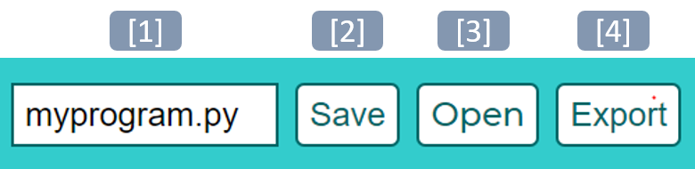
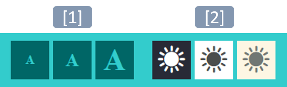

Welcome to PythonAdventures’s documentation!¶
Introduction¶
Python Adventures is a microworld designed by Alex Hadwen-Bennett at King’s College London to enable learners to learn the basics of programming through the creation of interactive stories and text-based adventures. It is free to use; however, it is also very much a work in progress and therefore I cannot provide any guarantees regarding its reliability.
Interface¶
The interface has been kept as simple as possible. At the top of the screen towards the middle are a set of buttons that enable the user to open, save and export.
Open, Save and Export Buttons¶
{kind=link}
The first item is a text box where you can enter a name for your file before you download or export it.
The next item is the save button, this will download your program as a Python (.py) file.
The third item is the open button, this allows you to select and open a Python (.py) file.
The forth and final item is the export button, this exports a webpage containing your current program along with the editor. The webpage should retain the same functionality of the online editor as long as it has access to pythonadventures.co.uk to download the required scripts.
Colour Scheme and Text Size Buttons¶
Another set of buttons that are found at the top right of the screen can be used to adjust the interface colours and text size to meet individual needs.
{kind=link}
The first set of three buttons alter the text size, you can choose from small, medium or large.
The second set of three buttons alter the colour scheme, you can choose from default, high constrast and low constrast.
The main page is divided into three main sections: Code, Output and Functions.
Code: this is the code editor where you can write and edit your code.
Output: this displays the text and graphic output of your program. A run button is included at the top of the panel that runs your program.
Functions: this enables you to call individual functions from your program, useful for testing.
Keyboard Shortcuts¶
Purpose |
Chrome |
Firefox |
Edge |
|---|---|---|---|
Run Program |
Alt + r |
Alt + Shift + r |
Alt + r |
Call Function |
Alt + c |
Alt + Shift + c |
Alt + c |